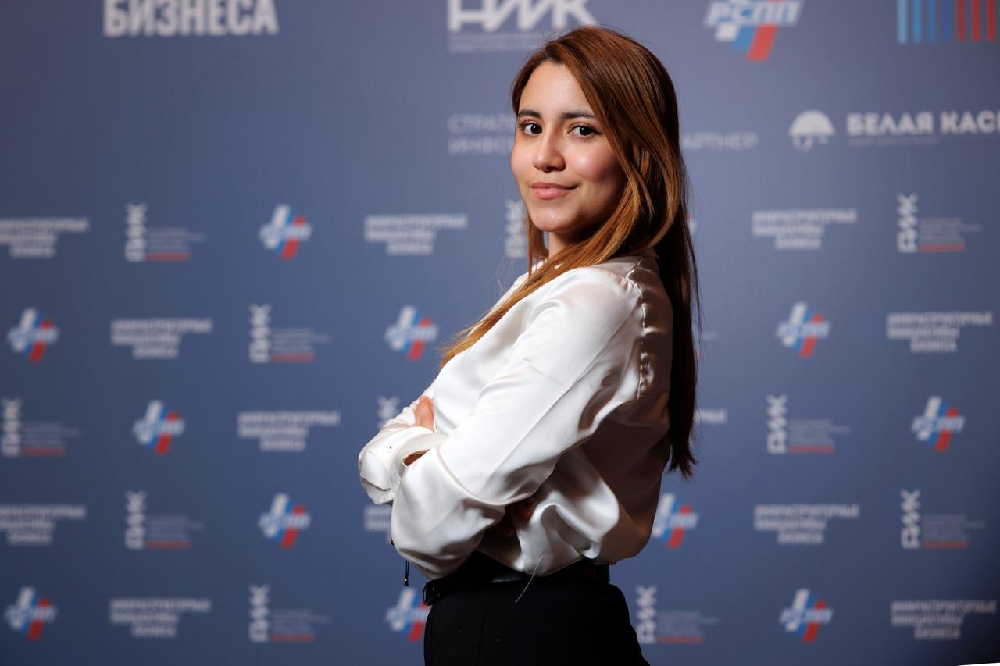

Carolina Vivas

Summary
I am a passionate Data Analyst and Mathematical Engineer who uses data-driven insights to help businesses make smart decisions and drive innovation. Skilled in Python and machine learning tools, I can find important patterns in complex data and create predictive models that guide business strategies. My experience enables me to turn data into actionable insights effectively. As a project manager, I have led teams to complete data-driven projects on time and within budget, and I communicate well with all stakeholders. I’m excited to connect with others in Data Science to share ideas and work on innovative projects that make an impact.
Education
- Master's degree,
Strategic Corporate finance - Higher School of Economics
(Sep 2023 - Jul 2025)
-
Bachelor's degree, Applied Mathematics and Informatics - State University of N.N Lobachevsky (Sep 2019 - Jul 2023)
Work experience
-
Programming Assistant - Itgenio
Feb 2023 - Present · 1 yr 10 mos
- Teaching programming alongside physics and mathematics, creating a dynamic learning environment where students engage with Python and Scratch
- Spanish and English teachinng for communication in technical contexts.
-
Operations Manager - 47Tech
Feb 2023 - Present · 1 yr 10 mos
- Controlling the transfer of orders to the courier service, their maintenance from the time of appearance to the time of collection
- Checking the financial reports
- Control of stock balances in warehouses
- Establishing tasks for the purchase of products.
Spanish Translator - Saavedra Spanish School
Jun 2022 - Aug 2022 · 3 mos
- Translate Russian series into Spanish, focusing on Latin American adaptation.
- Adapt cultural references, idioms, and humor to resonate with Latin American audiences.
- Maintain the original series' intent and tone in the translated content.
Skills
- Python: ⭐⭐⭐⭐⭐
- Applied Mathematics: ⭐⭐⭐⭐⭐
- Web Development: ⭐⭐⭐
- SQL: ⭐⭐⭐
- JavaScript: ⭐⭐⭐
- HTML + CSS: ⭐⭐⭐
Awards and Certifications
- IELTS Academic Test (Aug 2024)
- Report at a Conference: Title: 200 лет независимости Бразилии
- Course Title: Курс повышения квалификации "Политики управления интернетом на глобальном и глобальном уровне"
- Course Title: Правовое регулирование искусственного интеллекта
Other